速览
如果觉得某首曲子猛烈地适合正在做的游戏——是已有的曲子哦——有时会委托「想要一首像那样的」。作为参考资料，这有时非常有用：音乐家想要线索时，它是相当具体的参考例。但也有危险：首先，导演自己被那首曲支配头脑，可能就不再接受其他东西——不管听什么都感觉像赝品，这样固化了可不行。反过来作曲家也可能被支配：单纯做相似但不同的东西也许很痛苦；而且如果不知道哪些是被要求的要素、哪些必须改变，意外地也可能迷失目标。《神之手》第一关的曲子叫「Jeans Rock Eye」，他从作曲的高田先生那里听过：这是以「想要一首以 Ventures 为形象的曲」的委托接的。说到 Ventures，「嘀哩哩哩」的吉他很有特色吧？但好像不是那个意思——结果没留下那种地方，但完成成能感到冲浪音乐的样子。判断某曲适合游戏时，也有与该曲版权方谈判、直接让它可用的几个案例。他认为特别好的例子是《俺之尸越过去》的「花」：只在日本通，抱歉——被下了两年就死的诅咒，向子孙传承意志的主人公一族，和各具个性、开放然后凋零的花之歌，完美契合；据说是企划者增田先生直接谈下的。不限于音乐，仿照某作品做时，有时会省略要素，反过来也会增加。无论如何，新做的东西并不是他人做的作品，所以要灵活地推进必要的事。
1. 委托「像那样的」 0:04
如果觉得某首已有的曲子猛烈地适合正在做的游戏，有时会委托「想要一首像那样的」。
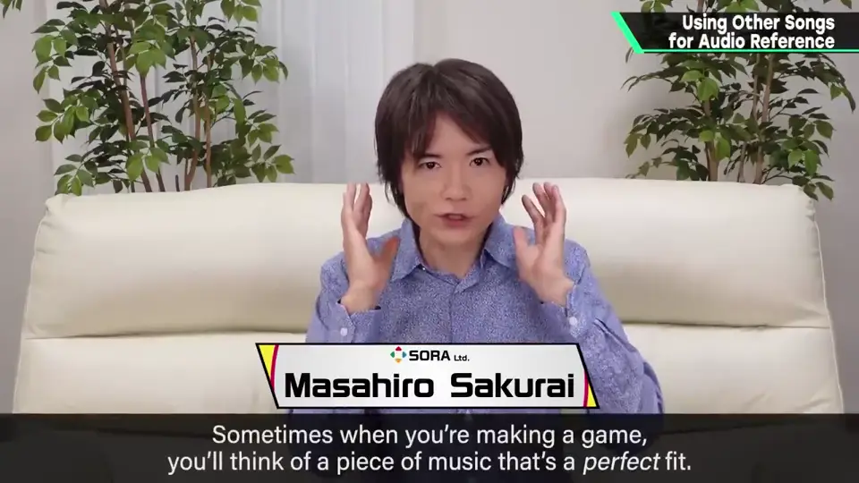
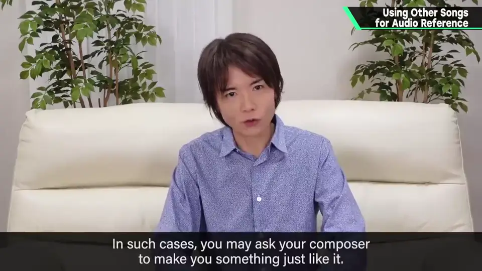
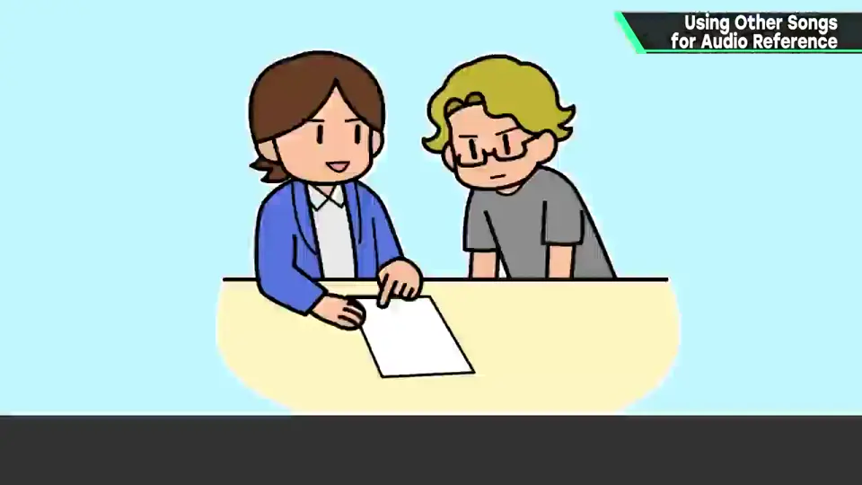
2. 两种危险 0:30
但也有危险。
- 导演自己被那首曲支配头脑，可能不再接受其他东西：听什么都像赝品。
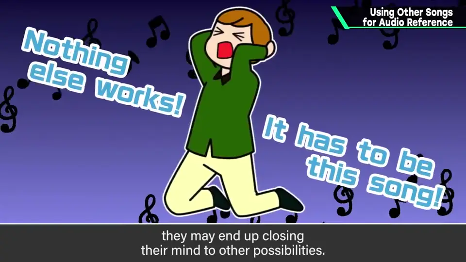
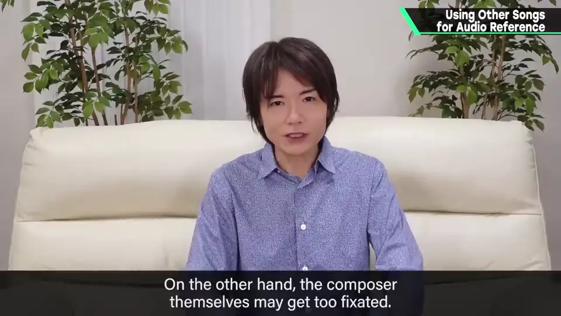
- 作曲家也可能被支配：单纯做相似但不同的东西也许很痛苦。
- 不知道哪些是被要求的要素、哪些必须改变，意外地也可能迷失目标。
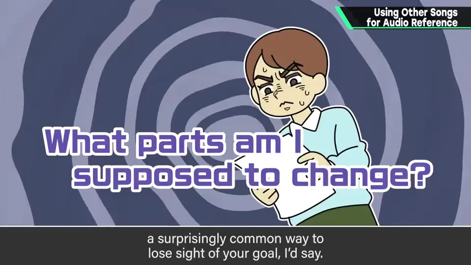
3. 《神之手》的例子 1:04
《神之手》第一关的曲子叫「Jeans Rock Eye」。据作曲的高田先生说，这是以「想要一首以 Ventures 为形象的曲」的委托接的。
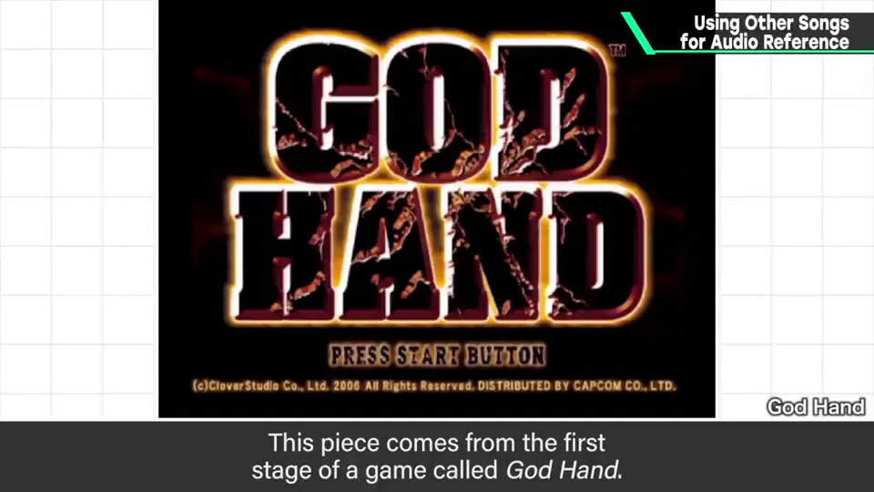
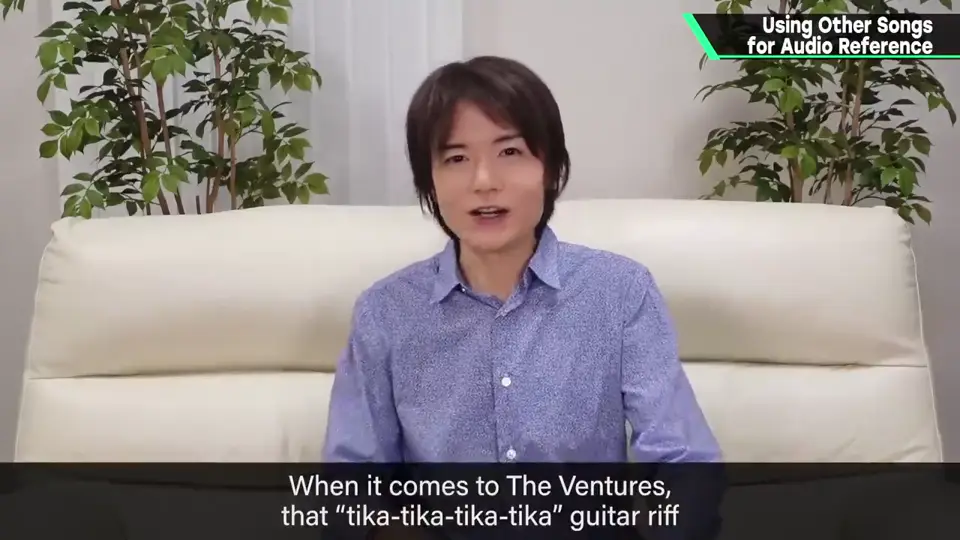
说到 Ventures，「嘀哩哩哩」的吉他很有特色吧？但好像不是那个意思。
结果没留下那种地方，但完成成能感到冲浪音乐的样子。
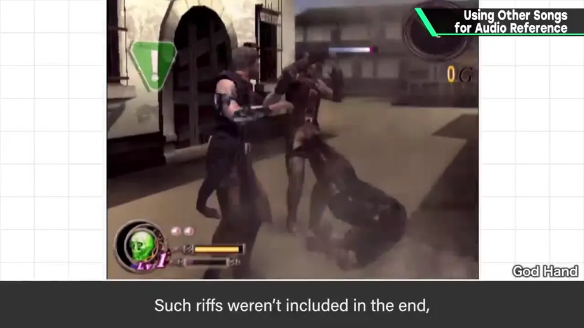
4. 直接用原曲 1:39
判断某曲适合游戏时，也有与版权方谈判、直接让它可用的几个案例。
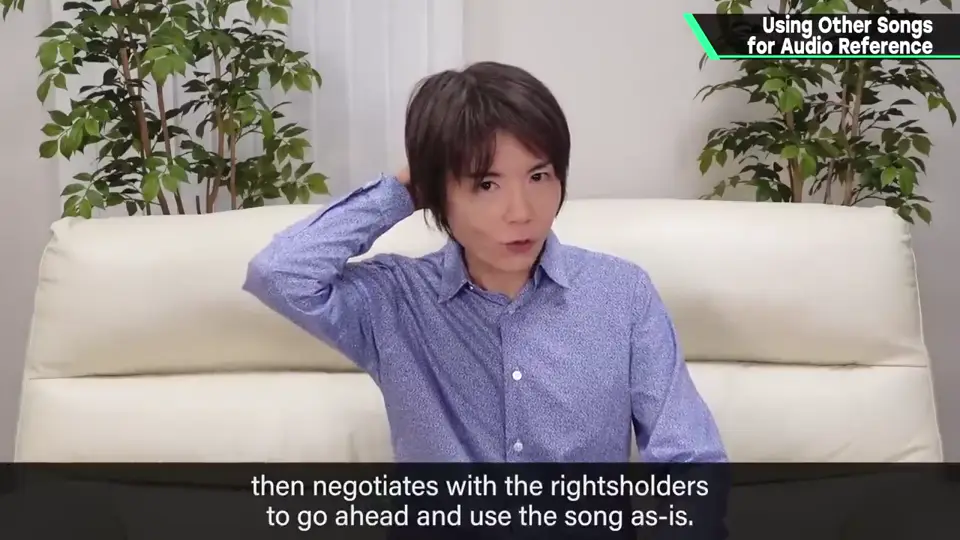
特别好的例子是《俺之尸越过去》的「花」：被下了两年就死的诅咒、向子孙传承意志的主人公一族，和各具个性、开放然后凋零的花之歌，完美契合。
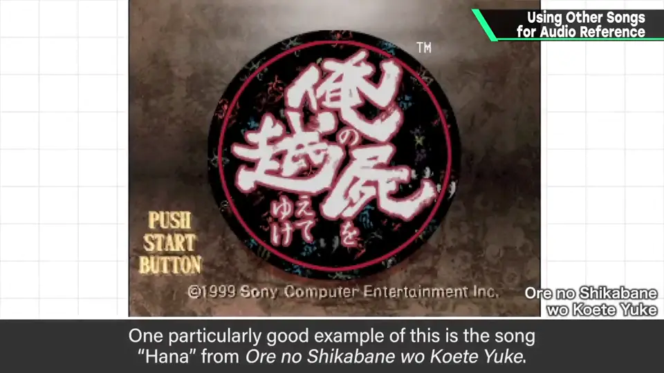
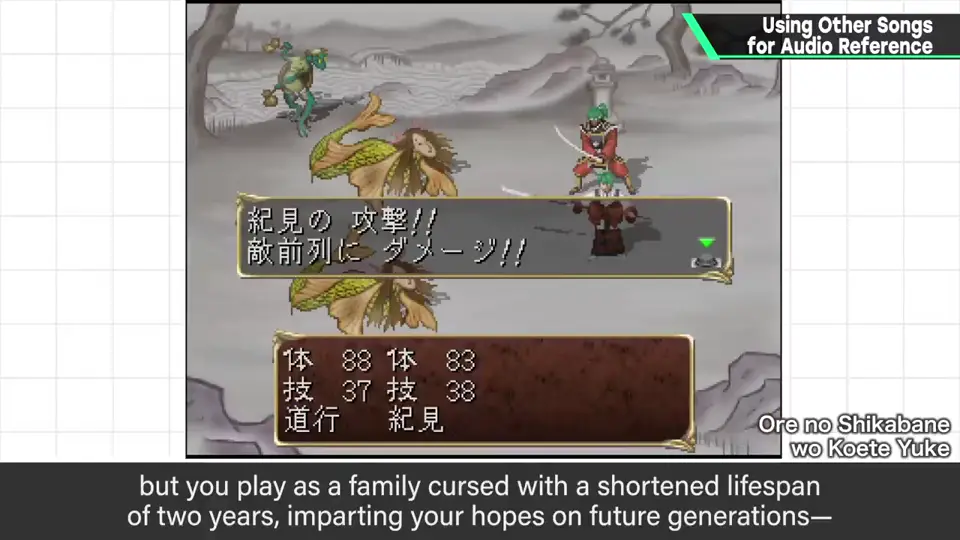
据说是企划者增田先生直接谈下的。
5. 保持灵活 2:31
不限于音乐，仿照某作品做时，有时会省略要素，反过来也会增加。
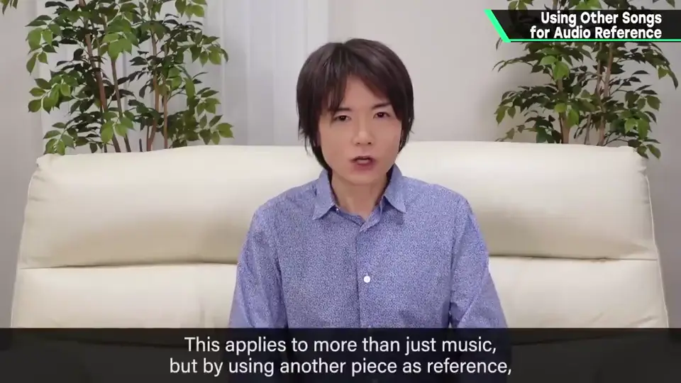
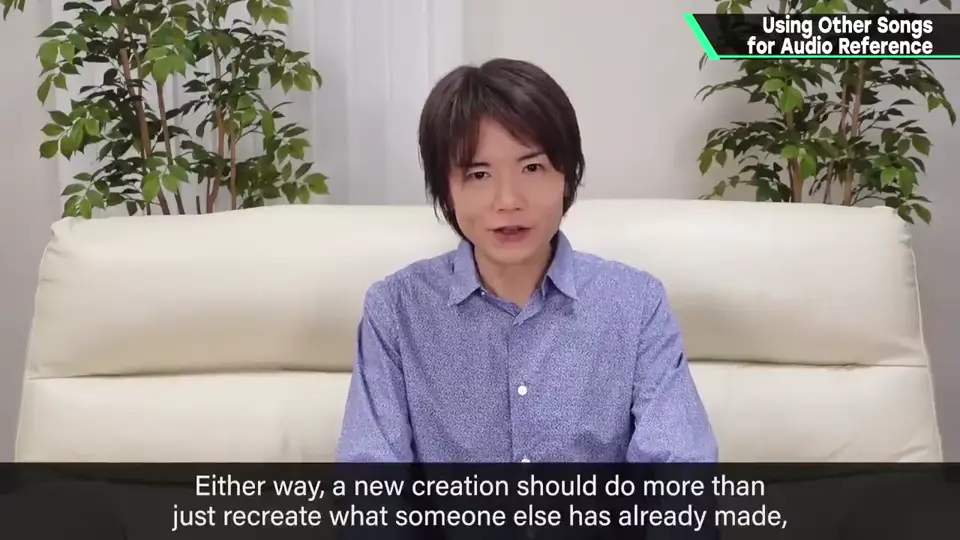
自测题
1. 用现有曲作参考有什么好处？
给作曲家相当具体的线索。 0:25
2. 用现有曲作参考有哪些危险？
导演被支配不接受其他；作曲家被支配难做「相似但不同」；不清楚该改哪里而迷失目标。 0:50
3. 《俺之尸》的「花」是怎么用进游戏的？
企划者增田直接与版权方谈判，使用原曲。 2:20